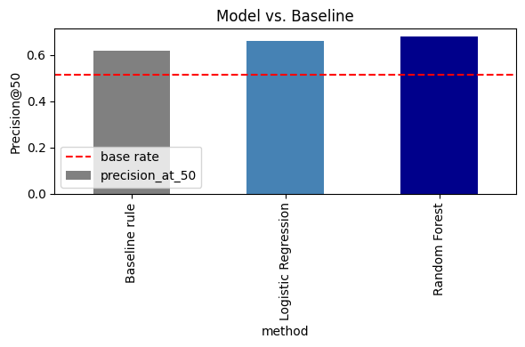

Content that ranks well in search quietly decays over time — rankings slip, clicks drop, and most teams notice too late. For a team tracking hundreds or thousands of pages per client, the practical question is never "is anything declining?" — it's which page should a human look at first?
That is a ranking problem, not a simple yes/no classification. An editor with limited time needs a short, trustworthy list, not a flood of "this might be declining" flags. This work builds and honestly tests one such ranking system, using it as an opportunity to test whether a common assumption — "the older and more neglected a page is, the more likely it's declining" — actually survives contact with validated data.
Unit of analysis and cost of a wrong call. The unit scored here is a single content page. The output is a per-page risk score that produces a ranked review queue; the action a human takes is opening the highest-scored pages first and deciding whether to refresh them. Getting this wrong has an asymmetric cost: a false positive burns limited editor time reviewing a page that was never actually at risk, while a false negative lets a genuinely declining page sit unreviewed until the drop is harder to reverse. Ranking (not just flagging) matters because it lets a team spend that limited time on the pages most likely to be worth it, rather than treating every flagged page as equally urgent.
This work uses FlyRank's pseudonymized ML-internship starter release:
content_refresh_anonymized.csv — 30,000 rows, one per content item, spanning 32
pseudonymized clients, with trailing-90-day search performance metrics per item.
trend_direction and trend_pct — these define the label itself, so using them as features would be circular (leakage).content_id and client_id — used solely for grouping and train/test splitting, never as model inputs.Label. A page is labeled "declining" if its current trend direction is downward — an observed, current-window signal. This is a real limitation (see below): it does not confirm the decline will continue.
Baseline. A transparent, hand-written rule: a page is flagged if it hasn't been updated in 180+ days and still receives 500+ impressions in the last 90 days — reasoning that a page which used to matter but has gone stale is worth a look.
Model. Logistic Regression, then a Random Forest — chosen because the underlying task is ranking a continuous risk score, not producing a fixed label. Simplicity first, complexity only where it earned its place.
Validation design. Client-grouped train/test split (25% of clients held out entirely), not row-random. A random split would let the same client appear in both sides, letting the model learn client-specific quirks instead of a signal that generalizes to a client it has never seen — the honest version of this question.
Leakage check. trend_direction and trend_pct — the fields
the label is computed from — were explicitly excluded from every feature set.
All three methods evaluated on the identical held-out clients, at the same metric.
| Method | Precision@50 | Base rate |
|---|---|---|
| Baseline rule | 0.62 | 0.52 |
| Logistic Regression | 0.66 | 0.52 |
| Random Forest | 0.68 | 0.52 |

Reading the errors matters more than the headline number. Permutation importance — which measures the actual drop in performance when a feature is shuffled, a more honest signal than a model's built-in importance score — surfaced something the metric alone would have hidden:
| Feature | Permutation importance |
|---|---|
| 90-day impressions | 0.0598 |
| Average position | 0.0236 |
| Content age | 0.0205 |
| Click-through rate | 0.0133 |
| Word count | -0.0086 |
| Days since last update | -0.0112 |
days_since_last_update — the entire basis of the baseline
rule — has negative permutation importance. Once validated across clients the model has
never seen, staleness behaves as noise, not signal. Visibility metrics (impressions, position) carry
the real predictive weight.
Where the two methods disagree. Looking at the held-out pages directly: most of the Random Forest's gains over the baseline come from pages the rule missed entirely — high-impression, slipping-position pages that hadn't gone stale by the 180-day cutoff, so the rule never looked at them. Conversely, the rule's false positives cluster on exactly the "stale but quiet" pages the permutation-importance result predicts it would misjudge: long-untouched pages with low current impressions, which the rule flags on age alone but the model correctly scores as low-risk. The two methods aren't failing randomly — the rule's errors are systematic and traceable directly to the assumption permutation importance shows is wrong.
Based on the validated model, the action playbook for a content team is:
Every result on this page is generated directly by the capstone notebook in the linked repository —
rerunning it with the same random seed (random_state=42) reproduces this table exactly.